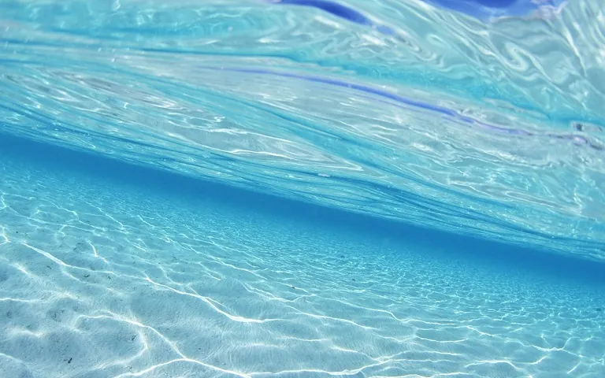
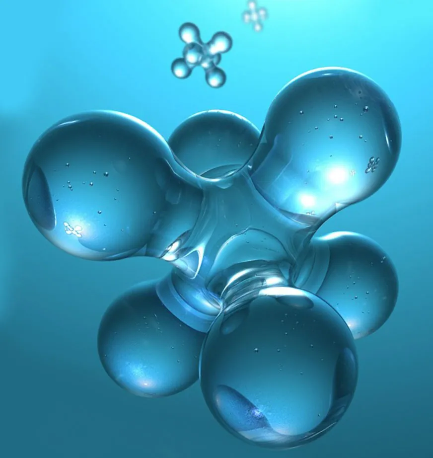

Статті про воду
Корисні матеріали про якість води, очищення та здоровий спосіб життя

Бутильована та фільтрована вода
Чим бутильована вода відрізняється від фільтрованої: як їх очищують, що з витратами, зручністю та…
Вода для дітей
Що дивитися на етикетці води для дітей, як підійти до води для сумішей і як дотримуватися гігієни бутлі та…
Доставка води в Броварах
Як замовити доставку води в бутлях 19,9 л у Броварах і Києві: способи замовлення, графік роботи,…
Зберігання бутлів із водою
Як зберігати бутлі з водою вдома й в офісі: світло, температура, гігієна, відкриття, догляд за помпою,…
Зворотний осмос
Зворотний осмос: плюси та мінуси. Розбираємо демінералізацію, стічні води домашніх систем, обслуговування…
Мінеральний склад води
Чим відрізняються артезіанська, мінеральна, очищена (осмос) і водопровідна вода: джерело, мінералізація,…
Фільтр у кулері
Чи потрібен фільтр кулеру для бутильованої води, як визначити строк заміни, як мити кулер і помпу та на що…
Як обрати воду для дому
Як обрати питну воду для дому: на що дивитися в джерелі й очищенні, як порівняти водопровід, фільтр і…
А ви знаєте, яка вода правильна
Багато років у спеку й холод люди п'ють мінеральну воду. Але чи варто вживати її багато й часто, знають не…
Актуальні акції на доставку води
Компанія

Безкоштовна вода Києва та Броварів
Санітарно-епідеміологічні станції Києва перевірили бювети на наявність якісної питної води. За…

Бутильована вода в раціоні
Порівняння побутової фільтрації та професійного очищення води. Дізнайтеся, чому бутильована вода…
Бутильована та мінеральна вода: у чому різниця
Оскільки послуга доставки води нині стала настільки популярною, що охоплює практично всі сфери…

Види води на Землі
Розбираємо основні види води: джерельна, артезіанська, мінеральна, дистильована й очищена. Яку воду обрати…
Вода без хлору
Дізнайтеся, чому хлорована вода шкідлива, як позбутися хімічного присмаку та чому професійне очищення від…

Вода в еко-тарі
Розбираємося, який пластик безпечний для води. Переваги харчового полікарбонату та еко-тари Crystal Water…
Вода в офіс
Організуйте доставку чистої води в офіс. Як правильний питний режим підвищує працездатність співробітників…

Вода гуртом
Гуртовий продаж очищеної питної води для офісів і бізнесу в Броварах і Києві напряму від виробника.…
Вода для малюків
Яку воду давати дітям? Розбираємо особливості вибору питної води для немовлят і дітей різного віку.…
Вода для рослин
Чому для кімнатних і садових рослин краще використовувати очищену воду? Розбираємо вплив солей жорсткості…
Вода для спортсменів
Чому питна вода важлива для спортсменів? Як якість води впливає на витривалість, відновлення та результат.…

Вода для схуднення
Дізнайтеся, як правильно пити воду для зниження ваги. Розбираємо вплив очищеної води на метаболізм і…
Вода натще
Чому корисно пити воду натще? Розбираємо рекомендації Аюрведи, користь для ШКТ і правила ранкового питного…

Вода під час вагітності
Рекомендації щодо питного режиму для вагітних. Яку воду обрати, скільки пити на день і чому якість води…

Вода після оберненого осмосу з доставкою в Київ
Те, чого ви напевно не знали про обернений осмос і бездоганне очищення будь-яких рідин завдяки оберненому…

Вода і кальцій
Дізнайтеся, як якість води впливає на засвоєння кальцію в організмі. Чому жорстка вода шкідлива і як…
Вода: фото, яке вразить увесь світ
Далі йтиметься про те, як якісно й красиво зняти краплю води, або яке фото води можна створити завдяки…
Відео 1983 р., де вода огортає Київ
Дуже цікавий ретровідеозапис Києва 1983 року. Зовсім інші вулиці, багато дерев, інша забудова, а подекуди…
Відео вода світу та її мешканці

Доставка від виробника
Як обрати надійного постачальника питної води? Критерії якості, технології очищення та переваги доставки…

Доставка Київ і область
Швидка й надійна доставка очищеної питної води по Києву та Київській області. Вигідні тарифи, професійне…
Жива вода
Що таке «жива вода»? Розбираємо вплив структури та чистоти води на енергетику й здоров'я людини.…

Зворотний осмос
Що таке зворотний осмос, як він працює і чому це найкращий спосіб очищення води. Дізнайтеся про переваги…
Значення води в житті
Дізнайтеся, чому вода життєво необхідна організму, що відбувається за зневоднення і як правильно…

Значення води для організмів
Чому вода — основа всього живого? Розбираємо роль води в життєдіяльності різних організмів та її вплив на…
Кава під час вагітності
Чи можна пити каву під час вагітності? Розбираємо вплив кофеїну на організм, норми споживання та чим…
Корисна вода
Розбираємо, що робить воду справді корисною. Чому проста фільтрація не завжди достатня і в чому секрет…
Кулер для води заощаджує час
У швидкоплинності та швидкості нашого життя всі дії комфортні, коли вони не змушують людину чекати,…

Лікування відварами
Чи можна лікувати організм водою з натуральними відварами? Розбираємо користь гідротерапії та важливість…

Мінеральна вода: склад і особливості вживання
Не так давно вчені зайнялися питанням зв'язку здоров'я людини та обстановки, в якій вона живе. Провівши…
Найкраща вода
Що робить воду найкращою? Розбираємо ідеальний баланс очищення, мінералізації та безпеки. Чому технологія…
Найпрозоріша вода озера Байкал

Наука про воду: що важливо знати
У цьому фільмі Ви ознайомитеся з цікавими чинниками зародження культури чистоти у світі та вживання чистої…
Норма води на добу
Як розрахувати індивідуальну норму води на добу? Розбираємо чинники, що впливають на потребу в рідині, і…

Норми води
Докладний гід із норм споживання води. Як розрахувати свою норму, чому вона змінюється і як правильно пити…

Озонова стерилізація
Що таке озонування води, як воно працює і чому це безпечніше за хлорування. Дізнайтеся про технологію…
Осмос vs Дистиляція
Порівняння методів очищення води: обернений осмос проти дистиляції. Що безпечніше, смачніше й корисніше…

Очищена вода
Розбираємо основні відмінності професійно очищеної води від водопровідної. Дізнайтеся, чому очищення води…

Перевірка якості води
Способи перевірки якості питної води в домашніх умовах. На що звернути увагу під час вибору бутильованої води.
ПЕТ пляшки або пластикова вода всюди
Однією з глобальних проблем довкілля є надмірне виробництво пластику, а саме пластикових пляшок.…

Пом'якшення води
Дізнайтеся, що таке жорстка вода, чим вона небезпечна для здоров'я і техніки, та як працює професійне…
Причини пити воду
Чому важливо пити очищену воду щодня? 7 головних причин: від енергії та шкіри до здоров'я нирок. Поради…
Простий аналіз води
У цьому відео представлено один із найпопулярніших останнім часом видів аналізу води — аналіз…

Робота системи осмосу
Докладний технічний огляд системи зворотного осмосу: від фільтрів грубого очищення до фінальної…
Сила води
Як звичка пити чисту воду змінює здоров'я, настрій і зовнішній вигляд. Реальні ефекти правильного водного…

Смак і характеристики води після зворотного осмосу

Схема зворотного осмосу: будова системи за етапами
Зворотний осмос на сьогоднішній день одна з найпопулярніших і справді найбільш виправданих систем очищення…

Фільтри для води
Прозорий огляд процесу очищення води в Crystal Water. 8 ступенів фільтрації, обернений осмос і озонування…
Холодна вода
Чи корисна холодна вода для здоров'я? Розбираємо вплив температури води на метаболізм, травлення та…
Храми води України та світу
Вода є в нашому житті найвагомішим чинником для виживання. Завдяки своїй важливості, вода для людини…

Хімічні добавки у воді
Чим небезпечні хімічні добавки в питній воді? Розбираємо вплив хлору та інших реагентів на здоров'я і як…
Чи може домашня вода бути смачною
Чи може водопровідна вода бути безпечною та корисною? Як очистити воду в домашніх умовах? Як перевірити,…
Чиста дистильована вода — це
Оскільки таблицю Менделєєва не скасували і сьогодні існує чимало видів води, варто знати, що таке…

Чистота води
Розбираємо, чому навіть найпрозоріша природна вода потребує очищення. Приховані загрози водогону та…

Що потрібно знати, купуючи воду в пляшці
Щоб зрозуміти, яка вода в пляшках краща, спочатку необхідно розібратися в достовірності виробника. Обирати…

Щодня літр води
Що буде, якщо пити літр чистої води щодня? Розбираємо користь для шкіри, метаболізму та загального…

Як замовити воду
Простий гід із замовлення якісної питної води. Як не помилитися з вибором постачальника та отримати воду…
Як робити знезараження води
Опинившись у непередбачуваній ситуації на безлюдному острові чи в джунглях, вам напевно знадобляться…
Яка вода потрібна організму
Дізнайтеся, яку воду обрати для здоров'я: відмінності водопровідної, дистильованої та професійно очищеної…
Якість води впливає на людину
Оскільки людина щодня споживає велику кількість води, її якість має бути відмінною. Те, що впливає на наші…
Інфографіка: роль води для організму
Це зображення схематично показує, який вплив має вода та її нестача на організм дорослої людини. Безліч…